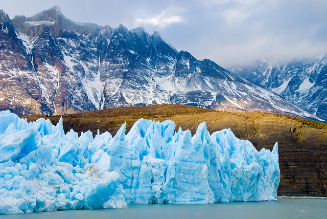
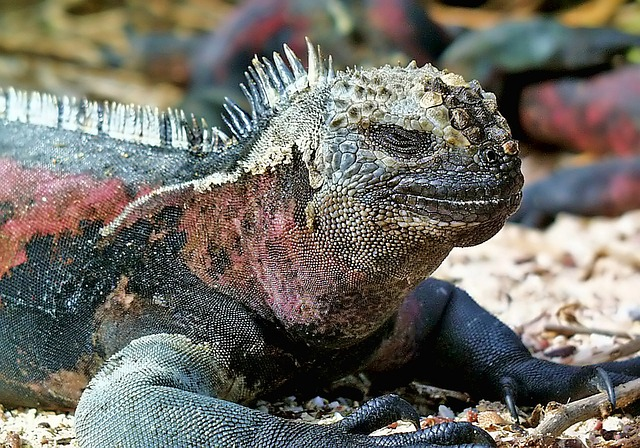
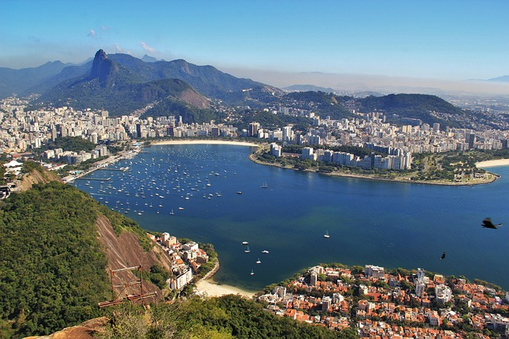

Miejsca warte odwiedzenia
Patagonia
lodowiec w Parku Narodowym Los Glaciares w południowo-zachodniej prowincji Santa Cruz w Argentynie. Jest to jedna z najważniejszych atrakcji turystycznych w argentyńskiej Patagonii.
Peru

najlepiej zachowane miasto Inków, w odległości 112 km od Cuzco. Położone jest na wysokości 2090-2400 m n.p.m., na przełęczy między Huayna Picchu a Machu Picchu w peruwiańskich Andach, w paśmie górskim Cordillera de Vilcabamba. Poniżej płynie rzeka Urubamba.
Galapagos
archipelag pochodzenia wulkanicznego na Oceanie Spokojnym, na wysokości równika, ok. 1000 km na zachód od wybrzeża Ameryki Południowej. Wyspy należą do Ekwadoru, a ich powierzchnia wynosi ok. 8 tys. km2.
Brazylia
Rio de Janeiro - drugie co do wielkości miasto Brazylii i do 1960 r. jej stolica, razem z przedmieściami liczy 12 milionów mieszkańców. Popularny kierunek turystyczny z plażami Copacabana i Ipanema, wzgórzami Corcovado i Głowa Cukru, stadionem Maracanã i obiektami olimpijskimi oraz corocznie obchodzonym karnawałem i muzyką bossa nova.